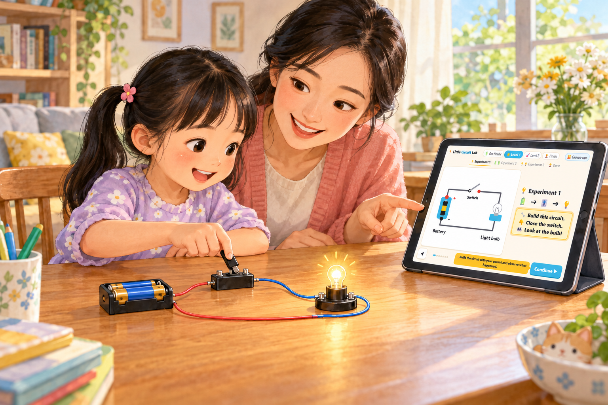

Let's make a light bulb shine! 💡
This is a play-along guide for a young child (about 5–7) and a grown-up, using a simple electricity kit: 2 batteries, 2 battery boxes, 2 bulbs, 1 switch and some wires.
⚠️ Stay with your child while building. Never connect a battery's + straight to its − with only a wire.
Bumpy end is +
Flat end is −
🎯 Tap the + end!
Hold a real battery and let your child feel the bump (+) and the flat end (−).
In the kit, every blue block has a red knob and a black knob. In the battery box, red is the + side and black is the − side. Put the battery in so its + end matches the + mark in the box.
To attach a wire, loosen a knob, push the bare metal end of the wire under it, then screw the knob tight again.
Carts carry power blocks ⚡ out of +.
The bulb takes the blocks. Empty carts go home to −.
A circuit is a closed path. Electricity can only flow when the path goes all the way around, from the battery's + back to its −. Tap "Break the loop" together: when the road is cut, everything stops and the bulb goes dark.
The cart picture: the carts stand for the electricity flowing in the wire. The power blocks stand for the energy each cart carries. The battery loads the carts, the bulb unloads them and turns the blocks into light, and the empty carts go back to be filled again. The carts are never used up; only the blocks are.
Ask your child: "What happens if a road has a hole in it? Can the cars get home?"
How many power blocks on a full cart?
"Power blocks" are a kid-sized way to talk about voltage. One AA battery is 1.5 V, so think of each block as about 0.75 V.
The same picture works for later experiments:
🔋 ➜ 🎚️ ➜ 💡
🔧 Build this circuit.
👇 Close the switch.
👀 Look at the bulb!
💡 The glow is faint. Turn off the room light, or cup your hands around the bulb.
🔍 No light? Check that the bulb is screwed in tight, each wire's bare metal is under a knob, the switch is pressed all the way down, and the battery faces the right way.
⚠️ Safety: never join the battery box's red knob straight to its black knob with only a wire. The wire gets hot and the battery drains quickly.
Before pressing Continue, ask your child: "What do you see? Is the bulb bright, a little bit on, or off?"
Only 1 bulb here, so it takes both power blocks ⚡⚡.
It uses them up to make light. 💡
The bulb needs 4 to shine bright. 2 are missing!
👆 Tap the switch!
One AA battery gives 1.5 V. The little bulbs in kits like this are made for about 2.5 to 3.8 V. Too little voltage pushes too little current through the thin wire inside the bulb, so it only warms up to a dull orange glow.
To keep it simple, we say the bulb "needs 4 power blocks from each cart" (about 3 V, which is two batteries). Each cart arrives with 2 and leaves empty: all of the battery's energy goes into the bulb, but it isn't enough to make it bright.
Ask: "We have two batteries. How could we give the bulb 4 power blocks?"
🔋🔋 ➜ 🎚️ ➜ 💡
🔋 Watch the battery direction!
Join the + of one battery to the − of the other.
🔧 Build it with 2 batteries.
👇 Close the switch.
👀 Is the bulb brighter?
We use both battery boxes, one after the other. In the picture they are box 1 and box 2.
🔍 Compare: if your child isn't sure it's brighter, quickly rebuild Experiment 1 next to it and look at both.
🔍 Dimmer than Experiment 1, or no light? One battery is probably the wrong way round. Check that box 1's black knob goes to box 2's red knob.
⚠️ Open the switch when you're done looking, so the batteries last longer.
Before pressing Continue, ask: "Is the bulb brighter or dimmer than last time?"
2 batteries 🔋🔋 put 4 power blocks on each cart.
Only 1 bulb here, so it takes all 4 ⚡⚡⚡⚡.
4 is just what it needs!
👆 Tap the switch!
Batteries joined in a row (in series, + of one to − of the next) add their voltages: 1.5 V + 1.5 V = 3 V. In the cart picture, each battery loads 2 blocks onto every cart that passes, so every cart now arrives at the bulb with 4.
It's the same carts going round, but each one carries twice as much energy, so the bulb gets enough to shine properly. (In real life, the bigger push also makes the electricity flow a bit faster. "Fuller carts" is the main idea for now.)
Ask: "What do you think happens if we have 2 bulbs and only 1 battery? Will each bulb get 2 blocks, or will they have to share?"
🔋 ➜ 🎚️ ➜ 💡 ➜ 💡
🔧 Build it with 1 battery and 2 bulbs.
👇 Close the switch.
👀 Look at both bulbs!
Back to 1 battery. The two bulbs go one after the other, so the carts must pass through bulb 1 and then bulb 2.
👀 Expect very little light. Turn off the room light and look closely. Even then you may see nothing at all, and that's the right result! The bulbs get so little power that the glow is too faint to see.
Before pressing Continue, ask: "Are the bulbs brighter or dimmer than in Experiment 1? Why do you think so?"
⭐ Bonus: swap in 2 batteries (as in Experiment 2). Each cart then brings 4 blocks, each bulb gets 2, and both glow dimly, just like Experiment 1.
Each cart still has only 2 power blocks.
2 bulbs must share: 1 for bulb 1, 1 for bulb 2.
Each bulb needs 4. 3 are missing!
👆 Tap the switch!
When bulbs are joined one after the other (in series), they share the battery's voltage. Each bulb gets about 0.75 V, half of the 1.5 V. In the cart picture, bulb 1 takes 1 block from each cart and bulb 2 takes the last one, so the cart goes home empty and each bulb gets only a quarter of what it needs.
(In real life, two bulbs also make it harder for electricity to flow, so the carts move more slowly too. "Sharing the blocks" is the key idea for now.)
Ask: "What if each bulb had its own road back to the battery, side by side? Would they still have to share?"
You built 3 circuits! ⭐⭐⭐
🔓 Level 2 is open!
Level 2 covers bulbs side by side (parallel) and short circuits, including safety. Please do Level 2 together with your child.
🔋🔋 ➜ 🎚️ ➜ 🔀 💡💡
🔧 Give each bulb its own road.
👇 Close the switch.
👀 Look at both bulbs!
2 batteries (like Experiment 2), and the 2 bulbs side by side: the road splits so each bulb gets its own path. You need 6 wires.
Compare it with Experiment 3: there the bulbs were in a row and both very dim. Now both should be bright.
⭐ Bonus: with the switch closed, unscrew one bulb. The other one keeps shining because it still has its own road!
The road splits in two. 🔀
Each cart picks one road and takes all 4 blocks to its bulb.
No sharing, so both are bright!
👆 Tap the switch!
Side by side (in parallel), each bulb is connected straight across the batteries, so each one gets the full 3 V. In the cart picture, a cart never visits both bulbs: it goes down one road or the other, and it carries all 4 blocks to that bulb.
The catch is that twice as many carts leave the battery, so the batteries work twice as hard and run out sooner.
Your house is wired like this. That's why switching off one lamp doesn't switch off the others.
🔋🔋 ➜ 🎚️ ➜ 💡 ➜ 💡
🔧 Build 2 batteries + 2 bulbs in a row.
🔗 Add the shortcut wire on bulb 2.
👀 Which bulb shines?
Take the shortcut wire off again and bulb 2 comes back.
⚠️ Only ever put the shortcut across one bulb. Never across both bulbs, and never straight across a battery box. The next pages explain why.
The shortcut wire is a slide 🛝. Bulb 2 is a hard climb 🧗.
Carts always pick the easy slide! So bulb 2 gets nothing.
Bulb 1 gets all 4 ⚡⚡⚡⚡. Bright!
👆 Tap the switch!
A plain wire lets electricity through very easily, but a bulb's thin filament makes it hard work. When you put a wire across bulb 2, almost all the electricity takes the easy wire and skips the bulb. Bulb 2 has been "short-circuited": the circuit has been made shorter, so it no longer goes through that bulb.
Bulb 1 is now the only bulb in the loop, so it gets the full 3 V, just like Experiment 2.
This one is safe because the carts still have to go through bulb 1, and the bulb keeps the flow under control. The next page shows when a short circuit becomes dangerous.
Metaphor to use: "Would you climb the big rock wall or take the slide? The carts always choose the slide."
🚫 Do NOT try this with a real circuit.
📱 On the screen only!
Carts must always go through a bulb.
If they can go from + to − without any bulb: 🚨 short circuit!
👆 Tap the shortcut buttons!
🚫 Never join + and − with only a wire!
A bulb limits how much electricity can flow. If there's a path from + to − with no bulb (or anything else that uses the power), nothing limits it. A huge current rushes round, and all of the battery's energy turns into heat in the wire and the battery.
If a wire or battery gets hot: let go, open the switch or take the battery out, and let it cool down. Please don't try the "both shortcuts" version with the real kit; the on-screen demo is enough.
You are now a little electricity expert! ⚡🏆
🏠 Electricity at home is much stronger than batteries. It can hurt you badly.
🚫 Plugs, sockets and cords are not toys. Never touch them or poke things in.
🙋 Always ask a grown-up for help.
Your child has explored batteries, open and closed circuits, series and parallel circuits, and short circuits.
Please reinforce the home-safety message: mains electricity (wall sockets, plugs, chargers, extension cords) is hundreds of times more powerful than the kit's batteries and can kill. Kids should never open, poke or play with anything plugged into the wall, and should never touch electrical things with wet hands.
"Play Again" starts from the beginning. Level 2 and Finish stay unlocked.